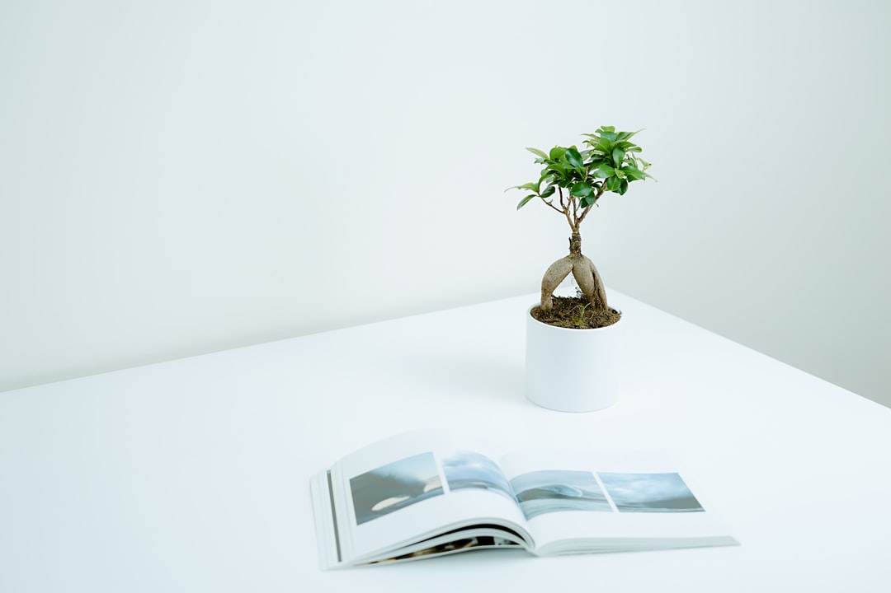

BONSAI
$19.99
By contrast with other plant cultivation practices, bonsai is not intended for production of food or for medicine. Instead, bonsai practice focuses on long-term cultivation and shaping of one or more small trees grower in a container.